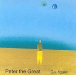

| Artist: | Peter The Great |
| Title: | Go Figure |
| Label: | Anvil Records |
| Length(s): | 67 minutes |
| Year(s) of release: | 2003 |
| Month of review: | [10/2004] |
| 1) | Battle Of The Dead Leopards | 5.40 |
| 2) | The Well | 1.09 |
| 3) | Bully | 4.52 |
| 4) | Cyclop's Binoculars | 5.03 |
| 5) | Nautilus 3.42 | |
| 6) | Lotus Eater | 9.41 |
| 7) | Seer's Fluxional Fluke | 3.18 |
| 8) | Edge Of Forever | 4.16 |
| 9) | Jupiter's Havana Cow | 2.09 |
| 10) | Labratto | 6.13 |
| 11) | The More I Know The Closer I Get | 2.44 |
| 12) | Compromise With An Idiot | 3.48 |
| 13) | Garlic Man | 7.11 |
| 14) | Pike | 8.12 |
After the filmic ditty The Well, Bully is a hectic piece of music, to say the least. Restraint goes overboard here. The harrowing notes fly by the ears, the music is the most likeness to solo prog musicians from the states: Fonya, the late Brian Hirsch, but also the more inaccessible such as Thomas Metcalf.
Cyclop's Binoculars is again highly percussive, but this time the coldness of the sound works well. The music alternates a lot, uses repetition extensively, and is very tuneful. There is a merry quirkiness to the music here, notwithstanding the somewhat mechanical feel. A bit like carnival music even.
With Nautilus we come to calmer waters. This is more electronic and cosmic, a bit new agey even. Lotus Eater is the longest track on this album, opening rather frolicly, referring to the instrumental side of New Wave of Ultravox, but a bit more percussive. For the rest, this is again closer to electronic music than to progressive rock. Notwithstanding the programmed drum sounds, there is a nice flow to it, reminding me at times of Eddie Jobson's Theme Of Secrets, with some harrowing passages. Quite a bit of tension in this one as well, especially in the last few minutes with the solo keyboard eruptions.
Seer's Fluxional Fluke takes us to something more quiet, yet dark and brooding. A nice atmosphere is created here, a bit in the vein of Hyperborea-era Tangerine Dream. Edge Of Forever is more overt again, fuller. Again, the music is a mix of electronic and New Wave, maybe a bit of gothic even, given the flat out coldness of the music. A bit in the vein of Random Hold which also moved in this area (without the vocals and the rock).
Where does one pick up a title like Jupiter's Havana Cow? Well, here. Thunderings and effects dominate this short and tense track. With Labratto we get some nervous baby's crying out, the vocal sounds are used in nervous percussive fashion. This is quite an original track with elements of eighties Tangerine Dream, but quite a bit less serious.
The More I Know The Closer I Get is a flowing piece, and quite repetitive. It is also very melodic, with two melodies doing all the work. Compromise With An Idiot is the total opposite again, heavy on the percussion. At times, I am reminded of ELP's Peter Gunn.
We close with two longer tracks. Garlic Man is a hectic piece of work similar to the previous track. There is more variation here though, also in tempo. And plenty of marimba like playing here as well. This is where the already mentioned self producing Americans come in again. This a song where I like Peter The Great the least.
The closer Pike is a slow piece, with a somewhat religious and mysterious ring to it.